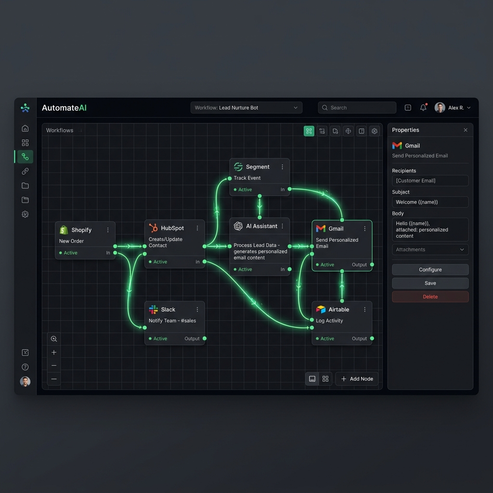

We believe that technology should empower teams to do their best work, not get in the way. Join us on our mission to eliminate busywork forever.
It started with a simple frustration. In 2021, our founders were leading a fast-growing remote team and realized they were spending more time managing tasks across ten different apps than actually doing the work.
Emails were lost, deadlines were missed, and the sheer volume of "busywork" was crushing creativity. We looked for a solution, but everything out there was either way too complex or too basic.
So, we built TaskFlow. What started as an internal weekend project quickly evolved into a platform that has now saved teams over 5 million hours of manual work and fundamentally changed how they operate.
To ruthlessly automate the mundane, so humans can focus on the creative, strategic, and impactful work that truly matters.
A world where every team operates at their highest potential, unburdened by administrative friction and disconnected tools.
The principles that guide every feature we build and every decision we make.
Power doesn't have to mean complexity. We design for absolute intuitive ease.
We iterate quickly, ship continuously, and respond instantly to our community.
Your success is our success. We build features based on real user needs.
We are open about our roadmap, our pricing, and how we handle your data.

Whether you're a team of 5 or 5,000, our infrastructure guarantees 99.99% uptime and lightning-fast syncing.
Enterprise-grade encryption, SOC 2 compliance, and granular role-based access control out of the box.
We didn't just bolt AI onto an old product. TaskFlow was built from the ground up with AI intelligence at its core.
How we went from an idea to empowering thousands of teams.
Founded in a small apartment in SF, the initial prototype of TaskFlow was built to solve our own remote work chaos.
Raised our $3M Seed round led by top-tier investors and officially launched our public Beta to the world.
Integrated state-of-the-art NLP, transforming TaskFlow from a basic task manager into a smart automation platform.
Hit a massive milestone of 10,000 active teams using TaskFlow daily to manage their mission-critical work.
Launching our Enterprise tier and expanding globally. The journey is just beginning.
The minds behind the magic.
Co-Founder & CEO
Co-Founder & CTO
Head of Design
VP of Engineering
Our impact at a glance.
See what our community has to say about TaskFlow.
Join thousands of teams already using TaskFlow to do their best work.